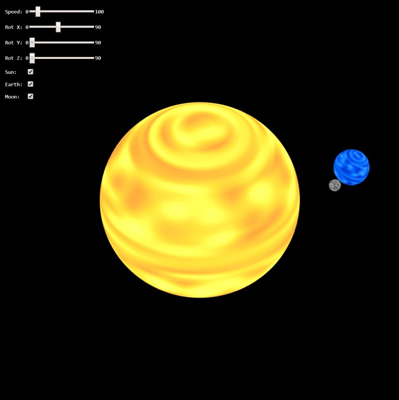

New Jersey Institute of Technology
Interactive Computer Graphics CS 438 / CS 657
Assignment 1
Date: 2/11/2026
Due: 2/25/2026
Go to Assignment Home | Task 1 | Task 2 | Task 3 | Task 4
Task 4-1 (8 points)
Implement procedural UV sphere geometry in sphereGeometry(...) and connect it properly to the rendering pipeline.
The implementation should
- generate vertex positions on a unit sphere using UV parameters
- generate per-vertex noise colors in the existing interleaved format
[x, y, z, c, c, c] - generate triangle indices for the UV grid (two triangles per quad)
- return valid
{ vertices, indices }data consumed by the GPU buffers
Use these references for the mathematical model and parameterization: UV mapping and Spherical coordinate system.
If your Task 4-1 implementation is incomplete, you may continue with Tasks 4-2 to 4-4 using the fallback mesh loaded from
./resources/sphere_uv_fallback.obj.
Describe the rationale of your implementation in the documentation section.
Task 4-2 (8 points)
Implement a model matrix for the Earth model using a concatenation of canonical transformations.
The Earth should
- be scaled accordingly
- rotate around its axis
- be tilted by -23.44 degrees with respect to (wrt) its orbit axis
- orbit around the sun.
Don't forget that the Earth's tilt angle is constant in the x-y-plane!
Be aware of the proper order of the transformations!
Once the model matrix is done, combine it with the viewMatrix and set the modelViewMatrix to the uniform shader variable
u_modelview using its location handle modelviewMatLocation.
Additionally, set the u_color and u_alpha uniform variables accordingly to achieve your desired visual effect.
Describe the rationale of your implementation in the documentation section.
Task 4-3 (8 points)
Implement a model matrix for the Moon model using a concatenation of canonical transformations.
The Moon should
- be scaled accordingly
- rotate around the Earth
- be tilted by -5.14 degrees with respect to (wrt) its orbit axis around the Earth in the x-y-plane
- orbit around the Earth
- orbit with the Earth around the Sun.
Be aware of the proper order of the transformations!
Once the model matrix is done, combine it with the viewMatrix and set the modelViewMatrix to the uniform shader variable
u_modelview using its location handle modelviewMatLocation.
Additionally, set the u_color and u_alpha uniform variables accordingly to achieve your desired visual effect.
Describe the rationale of your implementation in the documentation section.
Task 4-4 (4 points)
Use the uniform vec3 u_color to combine it with the provided attribute vec3 a_color in order to create shading for your celestial bodies. Be
creative! There is no "right" way to create this color, so invent it in order to obtain a color for planets which satisfies you.
The attribute vec3 a_color contains noise values sampled from Perlin Noise distribution.
The noise is given in the range between [0..1] and is the same in all three channels of a_color.
Describe your shading effect in the documentation.
Remark: if you are interested how the sphere is created and the noise is sampled, check out the function sphereGeometry(...).
Results
Your result should look similar like on the image below:

WebGPU Canvas
WebGPU: initializing Task 4 preview...
Documentation
Please write a short report here. It should list what you have implemented, as well as a brief discussion and your conclusions. Also add as many comments in your code as possible---it will help us in judging your work.
===========================================================================
ahhhhhh documentation
Assignment Validation & Authorship
To ensure academic integrity and verify original authorship and mastery of the material, exams will include specific Validation Question. Programming assignments are assessed on both code functionality and your understanding of the implementation. To verify authorship, exams will include specific "Validation Questions" related to the logic and structure of your submitted assignments.
Penalty Policy: An incorrect answer to a validation question demonstrates a gap in understanding the submitted work. For each validation question answered incorrectly, 10% of the total points for the corresponding assignment will be retroactively deducted from that assignment's grade.
This deduction applies regardless of the original score received on the assignment. It is your responsibility to ensure you can explain and reproduce the logic of any code you submit.
Honor Code
A set of ethical principles governing this course:
- It is okay to share information and knowledge with your colleagues, but
- It is not okay to share the code,
- It is not okay to post or give out your code to others (also in the future!),
- It is not okay to use code from others (also from the past) for this assignment!
Any noticed disregard of these principles will be sanctioned as per the Academic Integrity Policy of NJIT (see below).
Academic Integrity / Institutional Policies
Academic Integrity is the cornerstone of higher education and is central to the ideals of this course and the university. Cheating is strictly prohibited and devalues the degree that you are working on. As a member of the NJIT community, it is your responsibility to protect your educational investment by knowing and following the academic code of integrity policy that is found at: http://www5.njit.edu/policies/sites/policies/files/academic-integrity-code.pdf".
Please note that it is the professional obligation and responsibility of the instructor to report any academic misconduct to the Dean of Students Office. Any student found in violation of the code by cheating, plagiarizing or using any online software inappropriately will result in disciplinary action. This may include a failing grade of F, and/or suspension or dismissal from the university. If you have any questions about the code of Academic Integrity, please contact the Dean of Students Office at dos@njit.edu.
Good Luck!
Instructor: Dr. Przemyslaw Musialski, Associate Professor
Email: przemyslaw.musialski@njit.edu
Copyright (c) 2019-2026 Przemyslaw Musialski